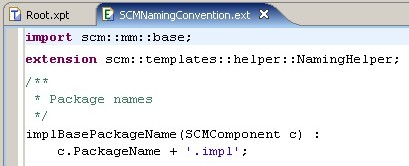
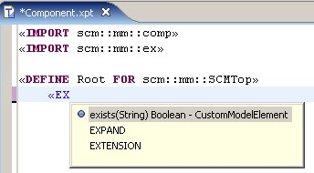

When you double-click on one of the above mentioned file types, special editors will open that provide appropriate syntax coloring.
Here are examples for the Xpand editor:

for the Extensions editor:

and for Check editor:

The Editors provide extensive code completion support by pressing
Ctrl + Space
similar to what is known from the Java
editor. Available types, properties, and operation, as well as
extensions from .ext files will be found. The
Xpand
editor provides additionally support for the
Xpand
language statements.
